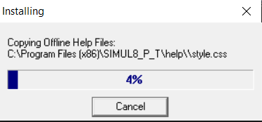
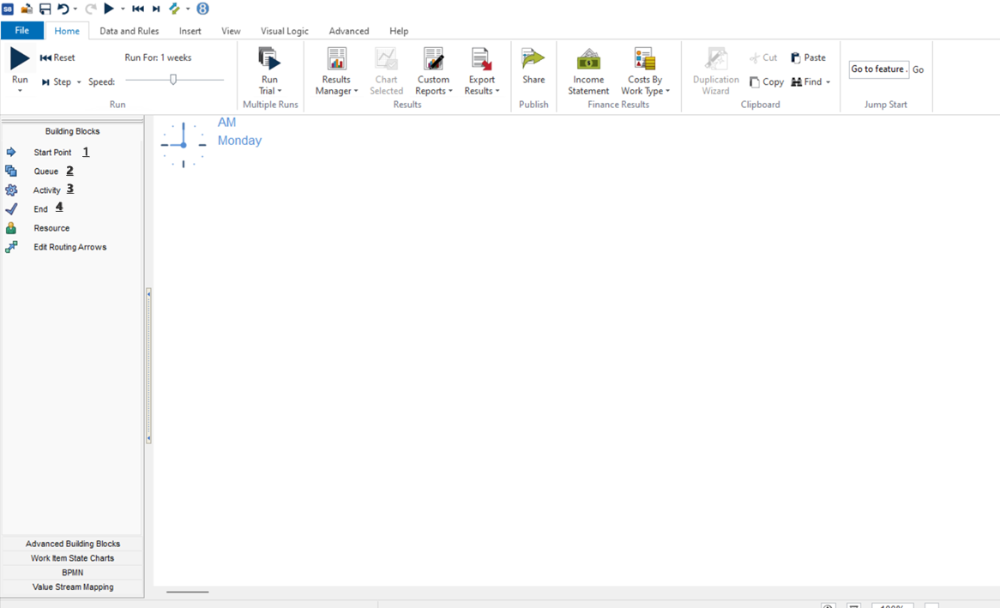

Manual técnico (SIMUL8)

- Autoras: Cinthia Iza - Helen Companioni
- Sitio web: https://www.simul8.com/demo
check_box Requerimientos de software y hardware
Son las características mínimas que debe de tener el hardware y software para ejecutar Simul8 en la computadora especifica.
Compatibilidad
- Windows 11
- Windows 10
- Windows 8.1
- Windows 8
- Windows 7 and Windows 7 64
- Windows XP and XP 64
Las versiones anteriores a Simul8 2012 no son compatibles con Windows 7 y las versiones anteriores a 2018 no son compatibles con Windows 10.
Hardware minimo
- Procesador i3 de un solo núcleo (o equivalente a Intel)
- 1 GB de RAM disponible por encima del mínimo requerido por su sistema operativo
- 170 MB de espacio disponible en el disco duro
- Mas RAM y un procesador multinucleo ayudaran a Simul8 a proporcionar mejores resultados
Compatibilidad adicional
Simul8 2021 puede usar archivos como hojas de calculo de excel, por lo que si tiene en su computador instalado Microsoft Office puede hacer uso de esto.
check_box Proceso de configuración e instalación
Pasos de instalación
- Paso #1 Completar los campos para recibir un correo electrónico de aceptación para descargar el .exe
- Paso #2 Dar clic en el archivo .exe descargado y ejecutar como administrador.
- Paso #2 Dar clic en la primera ventana que aparece y si se tiene alguna licencia se agrega, y dar clic en Next.
- Paso #3 Seleccionar el directorio donde se realizara la instalación.
- Paso #4 Dar clic en Accept para aceptar términos y condiciones. Y esperamos a que se termine de instalar

- Paso #5 Dar clic en Finish para terminar la instalación y LISTO
check_box Tutorial del uso de la herramienta (básico)
Mirando la pantalla inicial de Simul8 ,hemos enumerado los elementos de construcción
- Punto #1: Un punto de inicio es un lugar donde el trabajo a realizar aparece en su simulación por primera vez. Se pueden utilizar varios puntos de inicio y conectar con otros objetos usando flechas de enrutamiento.
- Punto #2: Una cola es el lugar donde el trabajo a realizar puede esperar hasta que los recursos o actividades adecuados esten disponibles.Este elemento compone la estructura de su simulación.
- Punto #3: Una actividad es un lugar donde se trabaja en elementos de trabajo.Este elemento requiere de tiempo y la disponibilidad de recursos; posterior puede enviarse el elemento de trabajo a otro objeto de simulación
- Punto #4: Un punto final representa que el trabajo esta completo y que una simulación fue terminada.
check_box Ejemplo Práctico
check_boxConclusiones y Recomendaciones
Con la herramienta SIMUL8 se pueden analizar, probar o implementar procesos en fabricas o instituciones para aumentar la eficiencia y la rentabilidad sin necesidad de generar mas gastos para el presupuesto general de una empresa.Ademas ayuda a tener claro la inversión que podria generar implementar un conjunto de procesos,también a minimizar los defectos y reducir los riesgos en la fabricación.Asimismo la herramienta es fácil de usar y de aprender; por lo que es un medio para obtener mejores resultados en el desarrollo y tomar decisiones rápidas.Adicional a lo planteado permite cambiar los parametros con fácil acceso y dar la apertura a múltiples posibilidades que podamos sugerir.Se recomienda tener el problema a plantear claro para determinar variables y los hilos en el proceso adecuados,para generar la simulacion mas factible a las necesidades emergentes.